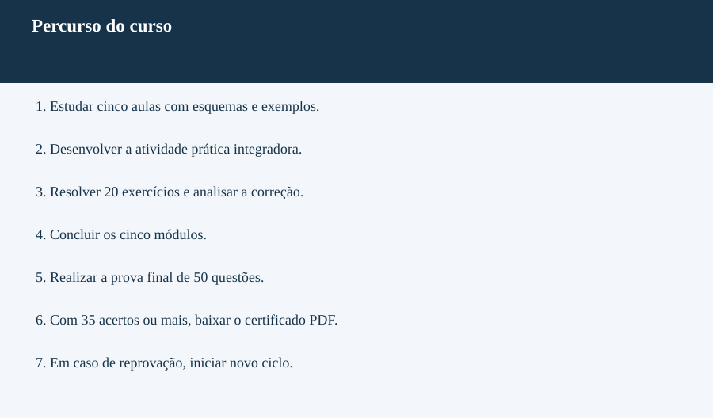

GESTÃO DE NEGÓCIOS · CURSO 03 · 40 HORAS
Assistente de Recursos Humanos
Gestão de Pessoas
CONTEÚDO AUTORAL
Desenvolvido por Khassio Silva · Plataforma Reino
Grade curricular e metodologia
Objetivo: apoiar rotinas de RH, recrutamento, integração, treinamento e comunicação, com registros confiáveis e respeito às responsabilidades.
Público: iniciantes e profissionais em atualização. Requisitos: leitura, escrita, operações matemáticas básicas e acesso à internet.
| Módulo | Carga horária | Competência |
|---|---|---|
| 1. Fundamentos, rotinas e proteção de dados | 8h | Organizar demandas de RH com responsabilidades claras e cuidado com informações. |
| 2. Recrutamento e seleção | 8h | Apoiar uma seleção com requisitos, registros e comunicação consistente. |
| 3. Admissão, integração e apoio ao departamento pessoal | 8h | Acompanhar rotinas documentais e integração com conferência e encaminhamento. |
| 4. Treinamento e desenvolvimento | 7h | Planejar ações de aprendizagem e acompanhar sua aplicação. |
| 5. Comunicação, indicadores e projeto integrador | 7h | Integrar comunicação, registros e indicadores em uma proposta de melhoria. |
| Revisão e prova final | 2h | Revisar e resolver 50 questões. |
| Total | 40h | 25 aulas, 5 práticas, 100 exercícios e 50 questões finais. |
Como aprender
Estude a explicação, observe o esquema específico da aula, analise o exemplo e realize o exercício guiado. Desenvolva a prática do módulo e responda 20 exercícios com correção comentada. Após cinco módulos, faça a prova final: 35 acertos ou mais liberam o certificado. Em caso de reprovação, inicie novo ciclo; o histórico é preservado.
As 40 horas são um planejamento de estudo e aplicação. Curso livre introdutório; orientações sobre vínculo, folha e documentação devem ser confirmadas com a área responsável e normas atuais. Use dados fictícios nas atividades.
Conteúdos
Módulo 1 - Fundamentos, rotinas e proteção de dados
- Papel do assistente de RH
- RH e departamento pessoal
- Fluxos, responsáveis e checklists
- Documentos e qualidade dos cadastros
- Privacidade e segurança da informação
Módulo 2 - Recrutamento e seleção
- Descrição de cargos e perfil da vaga
- Divulgação e canais de recrutamento
- Triagem objetiva de currículos
- Entrevista estruturada e evidências
- Decisão, retorno e organização da seleção
Módulo 3 - Admissão, integração e apoio ao departamento pessoal
- Admissão e checklist documental
- Integração e acolhida do novo colaborador
- Jornada, frequência e registros de ocorrências
- Benefícios e atendimento de dúvidas
- Apoio à folha e conferência de informações
Módulo 4 - Treinamento e desenvolvimento
- Levantamento de necessidades de treinamento
- Objetivos e planejamento de aprendizagem
- Organização de treinamentos
- Avaliação de treinamento e aplicação
- Feedback e plano de desenvolvimento
Módulo 5 - Comunicação, indicadores e projeto integrador
- Comunicação interna e escuta
- Conflitos, respeito e encaminhamento
- Indicadores de RH e interpretação
- Ferramentas digitais e organização de tarefas
- Projeto integrador e melhoria contínua
Carregando seu curso…
Seu percurso no curso
Conclua os cinco módulos antes da prova final. O certificado é liberado com pelo menos 35 acertos nas 50 questões.
Abrir fluxograma completo
Referências e organização
Curso autoral da Plataforma Reino. As fontes apoiam o estudo; não representam parceria ou certificação pelas instituições citadas.
As 40 horas correspondem ao planejamento de aulas, práticas, revisão e prova. Organize sua agenda para realizar todas as atividades.